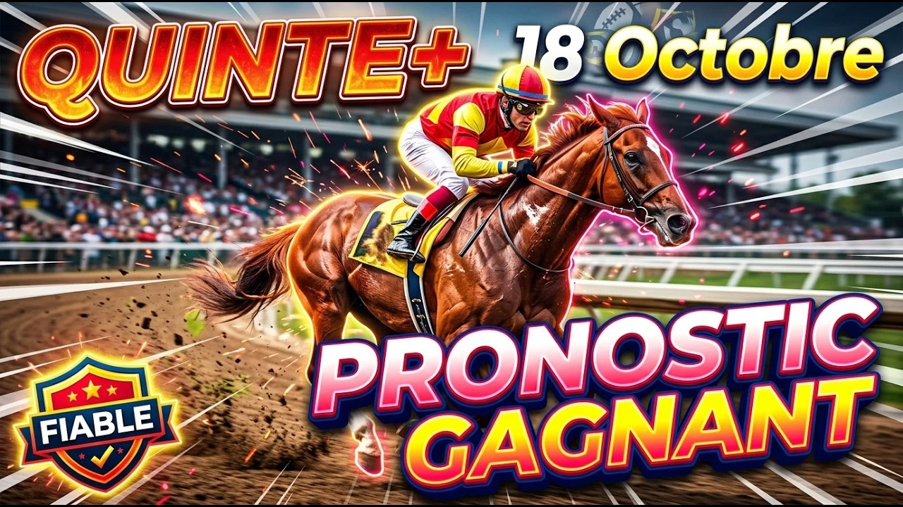

Il y a des courses où la vitesse seule ne suffit pas. Des courses où il faut savoir souffrir, où les derniers mètres décident de tout. Le Prix Rieussec, ce dimanche 18 octobre 2026, sur la grande piste de Paris Longchamp, est exactement de celles-là.
Seize chevaux de quatre ans et plus s'élancent sur trois mille cent mètres de gazon, corde à droite, pour un handicap divisé de Classe 2 doté de cinquante mille neuf cents euros. Le départ sera donné à quinze heures quinze. Un terrain annoncé bon, une grande piste, et surtout une distance de stayers. Voilà le programme. Sur un tel parcours, la tenue passe avant la vitesse. Celui qui craque dans la longue ligne droite ne se rattrape jamais.
Cette course, il faut d'abord la lire par les kilos. Le haut du tableau est écrasant. Le 1 Yes Zara, une jument de six ans, s'élance avec soixante kilos et demi, le poids le plus lourd de tous. Derrière elle, le 2 Don't Shut Me Down porte soixante kilos. Le 3 Black Saxon et le 4 Princesse D'amour arrivent à cinquante-huit kilos et demi. Tout en bas de l'échelle, le 16 Measter Owen ne porte que cinquante et un kilos. Près de dix kilos séparent le premier du dernier, et sur trois mille cent mètres, cet écart finit toujours par peser.
Deuxième clé de lecture, la corde à droite. Sur la grande piste de Longchamp, partir de l'extérieur coûte des mètres précieux. Il faut se placer à l'intérieur, économiser son parcours, et surtout ne pas se retrouver enfermé au moment du démarrage. Le placement vaut souvent une place à l'arrivée.
Troisième clé, le profil des stayers. Ici, on ne gagne pas avec un cheval de vitesse. On gagne avec un cheval qui sait attendre, qui économise ses forces et qui accélère au bon moment. Le Prix Rieussec récompense l'endurance, la régularité et l'expérience des longues distances.
Il faut aussi regarder le terrain. Le gazon annoncé bon va favoriser les chevaux à l'aise sur une piste roulante, ceux qui possèdent une action allongée et un vrai fond. Sur un sol souple, certains auraient souffert davantage. Ici, les spécialistes du bon terrain ont une carte à jouer, et cette donnée pèse dans le choix final. Ajoutez le rythme, toujours élevé sur une telle distance, et vous obtenez une course exigeante où chaque détail compte.
Un mot sur le profil de l'épreuve. Le Prix Rieussec est un rendez-vous attendu des amateurs de stayers, une course de référence pour les chevaux de fond en cette période de l'année. Le plateau réunit des éléments confirmés à ce niveau, des chevaux rompus aux handicaps de longue distance et des candidats en pleine progression. C'est exactement le genre d'épreuve où l'expérience fait la différence dans les derniers deux cents mètres. Entrons maintenant dans le vif du sujet, cheval par cheval.
Ma base, c'est le 10 Dempy. Ce hongre de cinq ans arrive avec un poids léger de cinquante-quatre kilos et demi, et c'est un avantage considérable. C'est un vrai stayer, un habitué des gros handicaps de fond, et il vaut bien mieux que ne le dit son dernier résultat, une dixième place sur deux mille cinq cents mètres, une distance trop courte pour lui. Sur trois mille cent mètres, il retrouve son terrain de jeu. Il apprécie la grande piste de Longchamp, s'adapte à tous les terrains, et il est associé à Cristian Demuro, l'un des meilleurs jockeys de la place. S'il n'est pas pris de vitesse au moment du démarrage, sa place est à l'arrivée. C'est ma base la plus solide.
Le 2 Don't Shut Me Down est un autre candidat très sérieux. Ce hongre de quatre ans a déjà gagné deux quintés, ce qui en dit long sur sa qualité. Il porte soixante kilos, un poids élevé, mais il arrive avec de la fraîcheur, un atout précieux en cette fin de saison. Maxime Guyon lui est associé, et cette association compte. Il reste sur une cinquième place, après une victoire et encore une cinquième place. Il adore le terrain bon, et sur sa fraîcheur, il peut dicter sa loi si le rythme lui convient.
Le 8 Mighty Boy, ensuite, est l'un des chevaux les plus en vue. Ce hongre de quatre ans est devenu irréprochable depuis qu'Edouard Monfort l'a rallongé. Regardez sa dernière série : une troisième place, encore une troisième, puis une deuxième, une quatrième, une troisième et une victoire. Une régularité impressionnante. Il porte cinquante-six kilos et demi, un poids raisonnable, et Stéphane Pasquier le monte. Sur un terrain bon, il a tout pour s'exprimer, et sa corde intérieure est un vrai plus.
Le 4 Princesse D'amour est la grande prétention de cette course. Cette jument de quatre ans est tout simplement invaincue en deux essais sur trois mille mètres, ce qui prouve son aptitude à la distance. Elle vient de gagner, et elle reste compétitive à cette valeur. Avec Christophe Soumillon sur le dos, elle détient une première chance théorique évidente. À cinquante-huit kilos et demi, elle a les moyens de lutter avec les meilleurs, et son aptitude aux longues distances en fait une adversaire redoutable.
Le 12 Vendomya est l'atout fraîcheur de la course. Cette jument de quatre ans ne porte que cinquante-deux kilos et demi, un poids très léger, et elle possède une superbe pointe de vitesse finale. Elle vient de s'imposer, après une troisième et une deuxième place. Alexis Lemaitre la monte, et son entourage la juge en pleine forme. Dans un handicap de fond, une jument dotée d'un tel finish et d'un poids si léger est toujours dangereuse. C'est le genre de cheval capable de surgir dans les deux cents derniers mètres et de créer la surprise.
Le 7 Step Morning est le tenant du titre. Ce hongre de huit ans a remporté cette même épreuve en 2025, et il se présente cette saison avec exactement la même valeur. C'est un spécialiste de ces rendez-vous, un cheval qui connaît le parcours par cœur. Il reste sur une troisième place, après une huitième et une cinquième position. Théo Bachelot le monte. À cinquante-sept kilos, il fait partie des belles chances théoriques, et son expérience des longues distances reste un argument de poids.
Le 5 A Beauregard est un cheval à ne pas négliger. Ce hongre de cinq ans, entraîné par Mickaël Cesandri, reste sur un échec, mais il faut le juger sur l'ensemble de sa saison. Il a gagné cette année, et il a montré qu'il savait tenir les longues distances. Damien Provost le pilote. Son poids de cinquante-huit kilos est raisonnable, et sa place tout à l'extérieur l'obligera à bien se placer. S'il trouve le bon dos, il peut venir chercher une place dans les cinq premiers.
Le 3 Black Saxon complète ma sélection. Ce hongre de cinq ans, entraîné par Nicolas Bellanger, est dur à l'effort et très à l'aise sur ce profil de course. Il arrive en magnifique état de forme, avec une deuxième place et une quatrième place lors de ses deux dernières sorties. Augustin Madamet le monte. À cinquante-huit kilos et demi, il apprécie particulièrement le terrain bon, et sa régularité en fait un sérieux prétendant à une place.
Il ne faudrait pas oublier les autres. Le 1 Yes Zara, malgré son poids écrasant de soixante kilos et demi, connaît parfaitement la grande piste de Longchamp et a déjà réussi sur ce tracé. Le 9 Ram Sea était meilleur que ne l'indique sa dixième place de rentrée, et sa musique plaide pour lui. Le 11 Ikko enchaîne les places sans gagner. Le 13 Recoletty, bien meilleure sur les longues distances que sur les parcours courts, reste sur une troisième place et pourrait surprendre. Et le 16 Measter Owen, allégé à cinquante et un kilos, partira de la corde la plus favorable.
Le 6 Ferdinand Premier mérite une mention. Ce hongre de quatre ans, entraîné par Jonathan Tastayre, a déjà gagné deux fois cette saison, avant une sortie plus difficile. Il porte cinquante-sept kilos et demi, un poids correct, et il partagera la corde avec Cédric Lecoeuvre. S'il retrouve son meilleur niveau, il peut se glisser dans le peloton de tête. Le 14 Zarflight, ancien sauteur reconverti sur le plat, manque encore de repères sur ce type de parcours, même s'il possède un fond certain. Quant au 15 Fantastico, il court surtout pour prendre de l'expérience à ce niveau et aura du mal face à des rivaux plus aguerris. Ces trois-là complètent un plateau très homogène, où aucun cheval n'est totalement hors de course.
Au final, trois éléments décident de ce Prix Rieussec : la tenue sur trois mille cent mètres, le poids porté et la capacité à bien se placer. Dempy a le poids et l'expérience, Don't Shut Me Down la fraîcheur, Mighty Boy la régularité, Princesse D'amour l'aptitude à la distance, Vendomya le finish et Step Morning la connaissance du parcours. Entre les stayers expérimentés et les chevaux légers en pleine confiance, notre logique penche pour les spécialistes de la distance, les mieux placés sur l'échelle des poids.
PRONOSTIC : 10 - 2 - 8 - 4 - 12 - 7 - 5 - 3
Regardez l'analyse complète sur YouTube :
Pronostic Quinté ParisLongchamp 18 octobre
Voilà toute l'analyse de ce Prix Rieussec. Si cette vidéo vous a été utile, abonnez-vous à la chaîne, partagez la vidéo et activez la cloche pour ne rien manquer des prochains quintés. Bonne chance à tous, et rendez-vous très vite pour une nouvelle analyse.